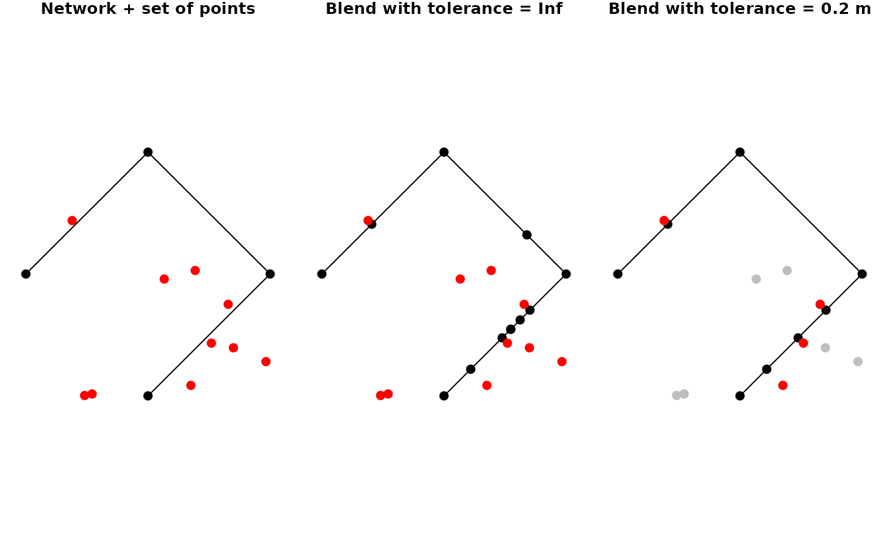

Blending a point into a network is the combined process of first snapping the given point to its nearest point on its nearest edge in the network, subsequently splitting that edge at the location of the snapped point, and finally adding the snapped point as node to the network. If the location of the snapped point is already a node in the network, the attributes of the point (if any) will be joined to that node.
st_network_blend(x, y, tolerance = Inf)An object of class sfnetwork.
The spatial features to be blended, either as object of class
sf or sfc, with POINT geometries.
The tolerance distance to be used. Only features that are
at least as close to the network as the tolerance distance will be blended.
Should be a non-negative number preferably given as an object of class
units. Otherwise, it will be assumed that the unit is
meters. If set to Inf all features will be blended. Defaults to
Inf.
The blended network as an object of class sfnetwork.
There are two important details to be aware of. Firstly: when the
snap locations of multiple points are equal, only the first of these points
is blended into the network. By arranging y before blending you can
influence which (type of) point is given priority in such cases.
Secondly: when the snap location of a point intersects with multiple edges,
it is only blended into the first of these edges. You might want to run the
to_spatial_subdivision morpher after blending, such that
intersecting but unconnected edges get connected.
Due to internal rounding of rational numbers, it may occur that the intersection point between a line and a point is not evaluated as actually intersecting that line by the designated algorithm. Instead, the intersection point lies a tiny-bit away from the edge. Therefore, it is recommended to set the tolerance to a very small number (for example 1e-5) even if you only want to blend points that intersect the line.
library(sf, quietly = TRUE)
# Create a network and a set of points to blend.
n11 = st_point(c(0,0))
n12 = st_point(c(1,1))
e1 = st_sfc(st_linestring(c(n11, n12)), crs = 3857)
n21 = n12
n22 = st_point(c(0,2))
e2 = st_sfc(st_linestring(c(n21, n22)), crs = 3857)
n31 = n22
n32 = st_point(c(-1,1))
e3 = st_sfc(st_linestring(c(n31, n32)), crs = 3857)
net = as_sfnetwork(c(e1,e2,e3))
pts = net %>%
st_bbox() %>%
st_as_sfc() %>%
st_sample(10, type = "random") %>%
st_set_crs(3857) %>%
st_cast('POINT')
# Blend points into the network.
# --> By default tolerance is set to Inf
# --> Meaning that all points get blended
b1 = st_network_blend(net, pts)
b1
#> # A sfnetwork with 12 nodes and 11 edges
#> #
#> # CRS: EPSG:3857
#> #
#> # A rooted tree with spatially explicit edges
#> #
#> # Node Data: 12 × 1 (active)
#> # Geometry type: POINT
#> # Dimension: XY
#> # Bounding box: xmin: -1 ymin: 0 xmax: 1 ymax: 2
#> x
#> <POINT [m]>
#> 1 (0 0)
#> 2 (1 1)
#> 3 (0 2)
#> 4 (-1 1)
#> 5 (0.2129865 0.2129865)
#> 6 (0.2825198 0.2825198)
#> # … with 6 more rows
#> #
#> # Edge Data: 11 × 3
#> # Geometry type: LINESTRING
#> # Dimension: XY
#> # Bounding box: xmin: -1 ymin: 0 xmax: 1 ymax: 2
#> from to x
#> <int> <int> <LINESTRING [m]>
#> 1 1 5 (0 0, 0.2129865 0.2129865)
#> 2 5 6 (0.2129865 0.2129865, 0.2825198 0.2825198)
#> 3 6 7 (0.2825198 0.2825198, 0.3112431 0.3112431)
#> # … with 8 more rows
# Blend points with a tolerance.
tol = units::set_units(0.2, "m")
b2 = st_network_blend(net, pts, tolerance = tol)
b2
#> # A sfnetwork with 6 nodes and 5 edges
#> #
#> # CRS: EPSG:3857
#> #
#> # A rooted tree with spatially explicit edges
#> #
#> # Node Data: 6 × 1 (active)
#> # Geometry type: POINT
#> # Dimension: XY
#> # Bounding box: xmin: -1 ymin: 0 xmax: 1 ymax: 2
#> x
#> <POINT [m]>
#> 1 (0 0)
#> 2 (1 1)
#> 3 (0 2)
#> 4 (-1 1)
#> 5 (0.3112431 0.3112431)
#> 6 (0.7104781 1.289522)
#> #
#> # Edge Data: 5 × 3
#> # Geometry type: LINESTRING
#> # Dimension: XY
#> # Bounding box: xmin: -1 ymin: 0 xmax: 1 ymax: 2
#> from to x
#> <int> <int> <LINESTRING [m]>
#> 1 1 5 (0 0, 0.3112431 0.3112431)
#> 2 5 2 (0.3112431 0.3112431, 1 1)
#> 3 2 6 (1 1, 0.7104781 1.289522)
#> # … with 2 more rows
## Plot results.
# Initial network and points.
oldpar = par(no.readonly = TRUE)
par(mar = c(1,1,1,1), mfrow = c(1,3))
plot(net, cex = 2, main = "Network + set of points")
plot(pts, cex = 2, col = "red", pch = 20, add = TRUE)
# Blend with no tolerance
plot(b1, cex = 2, main = "Blend with tolerance = Inf")
plot(pts, cex = 2, col = "red", pch = 20, add = TRUE)
# Blend with tolerance.
within = st_is_within_distance(pts, st_geometry(net, "edges"), tol)
pts_within = pts[lengths(within) > 0]
plot(b2, cex = 2, main = "Blend with tolerance = 0.2 m")
plot(pts, cex = 2, col = "grey", pch = 20, add = TRUE)
plot(pts_within, cex = 2, col = "red", pch = 20, add = TRUE)

par(oldpar)